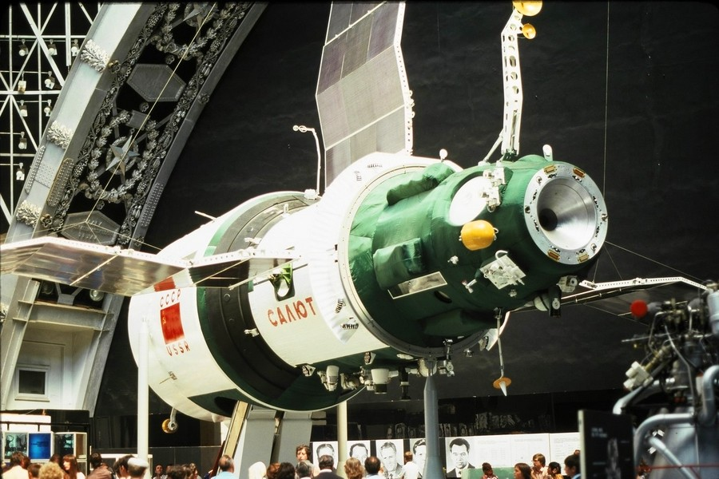

Этапы большого пути: тематические презентации
19.02.1473
Родился Николай Коперник

со дня рождения Николая Коперника – астронома, автора труда «О вращении небесных сфер».
14.12.1546
Родился Тихо Браге

со дня рождения датского астронома Тихо Браге, известного своими исключительно точными наблюдениями. Тихо Браге умер 24 октября 1601 года в возрасте 54 лет. До первой демонстрации телескопа Галилеем оставалось 8 лет.
15.02.1564
Родился Галилео Галилей

со дня рождения Галилео Галилея – человека, который первым использовал телескоп для астрономических наблюдений и сделал ряд выдающихся открытий.
27.12.1571
Родился Иоганн Кеплер

со дня рождения немецкого математика, астронома, механика, оптика, первооткрывателя законов движения планет Солнечной системы Иоганна Кеплера.
07.03.1792
Родился Джон Гершель

со дня рождения английского астронома Джона Гершеля. Он предложил современные названия спутников Сатурна и Урана, открыл свыше 3300 двойных звезд.
31.12.1864
Родился Дж. У. Ричи

со дня рождения американский астронома и конструктора телескопов Джорджа Уиллиса Ричи. Совершенствовал астрономические инструменты и методы наблюдений, соавтор распространенной современной системы рефлектора Ричи – Кретьена.
31.12.1864
Родился Р.Г. Эйткен

со дня рождения американского астронома Роберта Гранта Эйткена. Эйткен открыл более 3000 двойных звезд.
14.02.1904
Родился Б. А. Воронцов-Вельяминов

назад родился советский астроном Борис Александрович Воронцов-Вельяминов. Помимо науки он занимался педагогической и популяризаторской деятельностью.
20.12.1904
Начало создания обсерватории Маунт-Вилсон

назад Джордж Эллери Хейл получил одобрение на создание солнечной обсерватории Маунт-Вилсон (Mt. Wilson Solar Observatory). Слово «солнечная» в названии было убрано после завершения строительства 100-дюймового телескопа в 1917 году.
25.12.1904
Родился Г.Н. Дубошин

назад родился советский астроном Георгий Николаевич Дубошин. Он является одним из создателей московской школы небесной механики, автор ряда фундаментальных учебников по небесной механике, вёл исследования в области астродинамики, теоретической механики, теории устойчивости, теории притяжения.
04.02.1906
Родился Клайд Томбо

назад родился Клайд Уильям Томбо – американский астроном, открывший Плутон в 18 февраля 1930 года.
09.03.1934
Родился Юрий Алексеевич Гагарин

назад родился первый космонавт планеты – Юрий Алексеевич Гагарин.
06.03.1937
Родилась Валентина Владимировна Терешкова

назад родилась первая женщина-космонавт Валентина Владимировна Терешкова.
12.02.1947
Произошло падение Сихотэ-Алинского метеорита

назад произошло падение Сихотэ-Алинского метеорита.
26.01.1949
Первый свет на 5-метровом телескопе Хейла

назад был получен первый свет на 5.1-метровом телескопе имени Джорджа Хейла. До введения в строй Большого Телескопа Азимутального на Северном Кавказе в 1975 году он оставался крупнейшим в мире.
15.12.1966
Открытие спутника Янус

назад французским астрономом Одуэном Дольфюсом открыт спутник Сатурна Янус, находящийся на коорбитальной орбите с другим спутником Сатурна, Эпиметеем. Из-за этого спутники некоторое время путали.
23.02.1987
Вспыхнула SN 1987A

назад свет от вспышки сверхновой SN 1987A достиг Земли, преодолев расстояние в 168 тысяч световых лет.
Первый свет на Большом Канарском телескопе
13.07.2007

назад получен первый свет на Большом Канарском телескопе – The Gran Telescopio Canarias. С момента постройки GTC является крупнейшим телескопом в мире, но уступает по площади зеркал комплексу Большого бинокулярного телескопа.
падение Челябинского метеорита
15.02.2013

назад произошло падение метеорита в районе Челябинска.
04.10.1957
Запущен первый искусственный спутник Земли

назад на ракете-носителе, созданной на базе межконтинентальной баллистической ракеты «Р-7», был запущен первый искусственный спутник Земли. Его вес составлял 83.6 кг, диаметр – 58 см.
03.11.1957
Запущен второй искусственный спутник Земли

назад был запущен второй искусственный спутник Земли, впервые выведший в космос живое существо – собаку Лайку.
01.02.1958
Запущен первый американский искусственный спутник Земли

назад был запущен первый американский искусственный спутник Земли «Explorer-1»
15.05.1958
Запущен первый американский искусственный спутник Земли

назад с космодрома Байконур облегченной модификацией межконтинентальной баллистической ракеты Р-7 на орбиту запущен Спутник-3. На борту спутника было размещено 12 научных приборов.
03.03.1959
Запущена АМС «Пионер-4» – первая американская АМС, выведенная на гелиоцентрическую орбиту

назад запущена АМС «Пионер-4». Это первая американская АМС, выведенная на гелиоцентрическую орбиту.
03.03.1959
Запущена АМС «Луна-3»

назад запущена советская автоматическая межпланетная станция «Луна-3», с борта которой 7 октября сделана первая в истории фотография обратной стороны Луны.
11.01.1960
Создан Центр подготовки космонавтов в Звездном городке

назад создан Центр подготовки космонавтов в Звездном городке. В конце 1960-х центру присвоено имя Юрия Гагарина в память о первом космонавте планеты.
15.05.1960
Запущен первый прототип корабля-спутника «Восток»

назад с полигона «Заря» (Тюратам, Байконур) был произведен пуск ракеты-носителя 8К72К «Восток», которая вывела на орбиту Земли первый советский космический корабль-спутник массой 4540 кг. Корабль 1КП не был оснащен системой жизнеобеспечения, системой приземления и не покрывался теплозащитой. Внутри был установлен груз, имитирующий вес человека.
12.02.1961
Запущена АМС «Венера-1»

назад была запущена АМС «Венера-1», впервые пролетевшая на близком расстоянии от Венеры – 100 000 км.
09.03.1961
Выведен на орбиту Четвертый космический корабль-спутник

назад носитель «Восток» вывел на орбиту Четвертый космический корабль-спутник. Программа полета в точности имитировала одновитковый полет человека. Катапультируемое кресло пилота занял манекен «Иван Иванович» (в скафандре), в грудной и брюшной полостях которого разместили клетки с морскими свинками, мышами и другие медико-биологические объекты. Также в спускаемом аппарате находился некатапультируемый контейнер с собакой Чернушкой.
25.03.1961
Выведен на орбиту пятый космический корабль-спутник

назад был запущен и успешно выведен на орбиту пятый космический корабль-спутник. На борту находилась собака Звездочка. Во время этого полета прошло успешное испытание фоторазведывательной аппаратуры по заданным объектам Африки и Турции.
12.04.1961
В Советском Союзе выведен на орбиту первый в мире космический корабль-спутник с человеком на борту
назад, «12 апреля 1961 г. в Советском Союзе выведен на орбиту вокруг Земли первый в мире космический корабль-спутник «Восток» с человеком на борту. Пилотом-космонавтом космического корабля-спутника «Восток» является гражданин Союза Советских Социалистических Республик летчик майор Гагарин Юрий Алексеевич» (Сообщение ТАСС).
06.08.1961
Первый в мире космический полёт длительностью более суток

назад, с космодрома Байконур запущен космический корабль серии «Восток». Пилотом-космонавтом был Герман Степанович Титов, самый молодой космонавт в истории. «Восток-2» имел отличия от первого «Востока»: была доработана радиосвязь, заменена телевизионная система. Телеметрию дополнила коротковолновая система «Сигнал». «Восток-2» находился в полёте 25 часов 11 минут.
14.12.1962
Маринер-2 стал первой межпланетной миссией

назад аппарат NASA Маринер-2 стал первой межпланетной миссией, пролетев на расстоянии 34 833 км от поверхности Венеры.
16.06.1963
Валентина Владимировна Терешкова – первая в мире женщина-космонавт

назад запущен шестой и последний пилотируемый космический корабль из серии «Восток». Валентина Владимировна Терешкова стала первой в мире женщиной-космонавтом. Одновременно с «Востоком-6» в космосе находился космический корабль «Восток-5», который пилотировал космонавт Валерий Быковский.
25.01.1964
Запущен спутник «Эхо-2»

назад в США запущен спутник «Эхо-2», через него была установлена связь между США и СССР. Эхо-2 имел диаметр 41.1 м. Спутник вошёл в атмосферу Земли и сгорел 7 июня 1969 г.
18.03.1965
А.А. Леонов впервые вышел в открытый космос

назад советский космонавт Леонов Алексей Архипович впервые вышел в открытый космос.
16.12.1965
На орбиту выведена АМС «Пионер-6»

назад на гелиоцентрическую орбиту выведена автоматическая межпланетная станция «Пионер-6». Целью аппаратов «Пионер» было изучение солнечной плазмы, микрометеоритных потоков, космических лучей, магнитных возмущений, солнечного ветра, физики частиц.
03.02.1966
«Луна-9» впервые осуществила мягкую посадку на поверхность Луны

назад советская АМС «Луна-9» впервые в истории осуществила мягкую посадку на поверхность Луны и передала первую лунную фотопанораму.
22.02.1966
Запущен КА «Космос 110» с собаками Ветерок и Уголек на борту

назад был запущен КА «Космос 110» с двумя собаками на борту: Ветерком и Угольком.
01.03.1966
АМС «Венера-3» впервые в истории достигла поверхности другой планеты

назад АМС «Венера-3» впервые в истории достигла поверхности другой планеты.
24.12.1968
Аполлон-8 вышел на окололунную орбиту

назад состоялась миссия «Аполлон-8». Земляне впервые облетели Луну. Была получена знаменитая фотография восхода Земли над лунным горизонтом. Корабль вышел на окололунную орбиту 24 декабря и оставался на ней в течение 20 часов, сделав 10 витков вокруг Луны.
04.02.1972
Запущена АМС «Луна-20»

назад запущена АМС «Луна-20». АМС совершила мягкую посадку, произвела бурение и забор грунта в Море Изобилия. Затем 55 г. грунта были доставлены на Землю.
07.12.1972
Стартовала последняя миссия к Луне Аполлон 17

назад стартовала последняя миссия к Луне Аполлон 17. С борта космического корабля была сделана знаменитая фотография Земли из космоса.
11.12.1972
Последняя высадка людей на Луну

назад в ходе миссии Аполлон-17 произошла шестая и последняя высадка человека на Луну. Астронавты оставались на Луне чуть более трёх суток. За это время они совершили три выхода из корабля общей продолжительностью 22 часа. Было собрано и привезено на Землю 110.5 кг образцов лунной породы.
14.12.1972
Последние люди на Луне

назад Харрисон Шмитт и Юджин Сернан покинули поверхность Луны в ходе последней пилотируемой миссии Аполлон-17. Юджин Сернан стал последним человеком, стоявшим на поверхности Луны.
15.01.1973
«Луноход-2» доставлен на Луну станцией «Луна-21»

назад «Луноход-2» доставлен на Луну автоматической межпланетной станцией «Луна-21». Посадка произошла в кратере Лемонье на восточной окраине Моря Ясности. В 01:14 UT 16 января Луноход скатился на поверхность и сделал фото спускаемого аппарата «Луна-21».
08.02.1974
Завершилась последняя экспедиция на орбитальной станции «Скайлэб»

назад завершилась последняя экспедиция на американской орбитальной станции «Скайлэб». Она продлилась 84 дня и была рекордной по продолжительности до 1977 года.
12.02.1974
КА «Марс-5» вышел на орбиту Марса

назад КА «Марс-5» успешно вышел на орбиту Марса. Он передал новые сведения о планете, в том числе фотографии.
26.12.1974
Запущена космическая станция Салют-4

назад с космодрома Байконур ракетой-носителем «Протон-К» была запущена Космическая Станция «Салют-4». Ее масса составляла 18.5 тонн.
07.02.1977
Запущен советский пилотируемый космический корабль «Союз-24»

назад с космодрома Байконур был осуществлен запуск советского пилотируемого космического корабля «Союз-24». Цель – экспедиция на орбитальную станцию «Салют-5».
25.12.1978
Венера-12 совершила мягкую посадку на поверхность Венеры

назад космический аппарат «Венера 12» совершил мягкую посадку на поверхность Венеры.
05.03.1979
«Вояджер-1» прошел на расстоянии 20 600 км от спутника Юпитера Ио

назад АМС «Вояджер-1» впервые передала на Землю изображения вулканов на спутнике Юпитера Ио.
01.03.1982
«Венера-13» совершила мягкую посадку на Венеру

назад АМС «Венера-13» совершила мягкую посадку на Венеру, впервые передала цветные снимки и данные анализа грунта с другой планеты.
05.03.1982
«Венера-14» совершила мягкую посадку на Венеру

назад АМС «Венера-14» совершила мягкую посадку на поверхность Венеры.
07.02.1984
Первый выход в открытый космос без какой-либо механической связи с кораблём

назад Астронавт НАСА Брюс Маккэндлесс впервые работал в открытом космическом пространстве без механической связи с кораблем в свободном полете.
08.02.1984
Запущен пилотируемый космический корабль «Союз Т-10»

назад был запущен пилотируемый космический корабль «Союз Т-10». 9 февраля произошла стыковка с орбитальной научной станцией «Салют-7», которая с ноября 1983 года была необитаемой и находилась в автоматическом режиме полёта.
15.12.1984
Старт КА «Вега-1» и «Вега-2»

назад, 15 и 21 декабря, с помощью ракеты «Протон» стартовали «Вега-1» и «Вега-2». Эти советские автоматические межпланетные станции предназначались для изучения Венеры и кометы Галлея.
20.02.1986
Выведен базовый блок научной орбитальной станции «Мир»

назад на космическую орбиту выведен базовый блок научной орбитальной станции «Мир».
09.03.1986
АМС «Вега-2» прошла на кратчайшем расстоянии от ядра кометы Галлея

назад советская АМС «Вега-2» прошла на расстоянии 8 030 км от ядра кометы Галлея и провела съемку в инфракрасном диапазоне.
05.02.1987
Запущен советский пилотируемый корабль «Союз ТМ-2» к орбитальной станции «Мир»

назад запущен советский пилотируемый корабль «Союз ТМ-2» в рамках второй экспедиции к орбитальной станции «Мир». Экипаж старта: Юрий Романенко, Александр Лавейкин.
14.02.1990
«Бледно-голубая точка» – фотография Земли с 6 млрд. километров

назад КА «Вояджер-1» передал на Землю одни из последних фотографий. На этом снимке Земля – бледная точка на коричневой полосе – сфотографирована с расстояния в 6 млрд км (40.5 а.е.). В 2020 году фотография была переобработана.
03.02.1994
Сергей Крикалёв стал первым российским космонавтом на американском космическом корабле

назад состоялся первый полет российского космонавта на американском космическом корабле: в миссии STS-60 шаттла Discovery принял участие Сергей Крикалёв. Совершив 130 витков и пролетев 5.486.215 километров, 11 февраля 1994 года корабль Discovery совершил посадку в космическом центре имени Кеннеди (штат Флорида). Продолжительность полёта составила 8 сут. 7 ч 09 минут 22 с.
04.03.1994
Стартовала миссия STS-62 шаттла «Колумбия»

назад состоялся 16-й старт шаттла «Колумбия» для продолжения медико-биологических исследований и астрономических наблюдений.
07.12.1995
КА Галилео достиг Юпитера

назад космический аппарат Галилео достиг Юпитера.
11.02.1997
Команда шаттла Discovery, миссии STS-82, отправляется ремонтировать телескоп Hubble

назад команда шаттла Discovery, миссии STS-82, отправляется ремонтировать и обновлять телескоп Hubble.
07.02.1999
Запущена станция NASA «StarDust» для изучения кометы Вилт 2

назад с космодрома на мысе Канаверал была запущена станция NASA «StarDust» для изучения кометы Вилт 2 (81P/Wild).
11.02.2000
Запуск шаттла Индевор в рамках миссии STS-99

назад в рамках миссии STS-99 c мыса Канаверал стартовал шаттл Индевор. Главная цель – создание цифровой модели высот Земли с помощью радарной топографической съёмки. Полученная цифровая модель охватила 80% земной суши (от 56° ю. ш. до 60° с. ш.) и являлась наиболее полной до 2009 года. Общая пролжительность миссии – 11 дней 5 часов 39 минут.
14.02.2000
«NEAR Shoemaker» вышел на орбиту астероида Eros

назад АМС «NEAR Shoemaker» вышел на орбиту астероида Eros и стал первым искусственным спутником астероида, совершившим мягкую посадку на астероид 12 февраля 2001 года и определив состав его грунта.
23.01.2003
Получен последний сигнал от АМС «Пионер-10»

назад получен последний сигнал от АМС «Пионер-10»
01.02.2003
Крушение шаттла «Колумбия»

назад при возвращении на Землю миссии STS-107 потерпел крушение шаттл «Колумбия»
25.01.2004
На Марсе совершил посадку марсоход NASA Opportunity

назад на Плато Меридиана на Марсе совершил посадку второй марсоход NASA Opportunity
12.01.2005
К комете 9P/Темпеля запущена миссия Deep Impact

назад к комете 9P/Темпеля запущена миссия Deep Impact.
15.01.2006
На Землю вернулась капсула КА «Stardust», содержащая образцы вещества кометы Вильда 2

назад вернулась на Землю капсула КА «Stardust», содержащая образцы вещества кометы Вильда 2.
19.01.2006
Запущен аппарат «Новые горизонты»

назад запущен аппарат «Новые горизонты». АМС исследовала Плутон и другие объекты пояса Койпера.
19.01.2006
Запущен японский спутник Д33 ALOS

назад из космического центра Танэгасима запущен спутник Д33 ALOS (Advanced Land Observing Satellite) для мониторинга земной поверхности и океанов.
02.02.2009
Запуск Иранского спутника «Омид»

назад состоялся запуск Иранского спутника «Омид». Это второй исследовательский и телекоммуникационный спутник Ирана, впервые запущенный самостоятельно.
10.02.2009
Первое столкновение искусственных спутников Земли за всю историю космонавтики

назад произошло первое столкновение искусственных спутников Земли за всю историю космонавтики. Столкновение произошло на высоте 789 км над полуостровом Таймыр.
08.02.2010
Запуск шаттла Индевор в рамках миссии STS-130

назад в миссии STS-130 c мыса Канаверал стартовал шаттл Индевор. Основная цель – доставка и установка модулей «Транквилити» («Спокойствие») и «Купол». Миссия завершилась успешной посадкой 22.02.2010. Общая пролжительность миссии – 13 дней 18 часов 6 минут.
11.02.2010
Запущена солнечная обсерватория Solar Dynamic Observatory

назад была запущена солнечная обсерватория SDO – Solar Dynamic Observatory
04.06.2010
Первый запуск ракеты-носителя Falcon 9

назад состоялся первый запуск ракеты-носителя Falcon 9 среднего класса компании США SpaceX. По своим характеристикам ракета схожа с советским, а затем российским носителем Протон-К.
21.07.2011
Последний полет Space Shuttle

назад завершился последний полет по программе Space Shuttle.
31.12.2014
Запущен китайский метеорологический спутник Фэнъюнь-2G

назад был запущен китайский метеорологический спутник Фэнъюнь-2G. Китайская космонавтика работает без выходных!
06.03.2015
КА «Dawn» вышел на орбиту вокруг Цереры

назад КА «Dawn» прибыл к карликовой планете Церера.
22.12.2015
Произведена вертикальная посадка первой ступени ракеты-носителя Falcon 9

назад, 21 декабря около 17-40 по местному времени, была произведена вертикальная посадка первой ступени ракеты-носителя Falcon 9. В августе 2016 ступень была установлена на территории штаб-квартиры SpaceX в Хоторне, штат Калифорния.
14.08.2017
Запущен космический телескоп класса 6U CubeSat ASTERIA

назад был запущен космический телескоп класса 6U CubeSat ASTERIA (Arcsecond Space Telescope Enabling Research in Astrophysics). 20 ноября 2017 года он был выпущен на низкую околоземную орбиту с борта МКС. Космический аппарат массой 12 кг продемонстрировал возможности новых технологий для наблюдения экзопланет транзитным методом.
06.02.2018
Первый запуск сверхтяжелой ракеты-носителя Falcon Heavy

назад был произведен первый запуск сверхтяжелой ракеты-носителя Falcon Heavy с космодрома на мысе Канаверал.
07.12.1944
Международный день гражданской авиации
назад была подписана конвенция о международной гражданской авиации. С 1994 года седьмого декабря отмечается международный день гражданской авиации.
14.10.2012
Рекорд высотного прыжка и пилотируемого полета на стратостате

назад Феликсом Баумгартнером был поставлен рекорд по высоте прыжка с парашютом (38 969.3 метра) и по скорости свободного падения (1 357.64 км/ч). Таким образом, парашютист стал первым человеком, преодолевшим в прыжке звуковой барьер.
08.02.2020
Рекорд времени полета через Атлантику среди дозвуковых самолетов

Пассажирским самолетом Boeing 747-436 установлен рекорд времени полета через Атлантику среди дозвуковых самолетов. Самолет вылетел из Международного аэропорта имени Джона Кеннеди и прилетел в аэропорт Хитроу в Лондоне всего через 4 часа 56 минут. Путевая скорость самолета достигала 717 узлов (1328 километров в час). Среднее время полета из Нью-Йорка в Лондон при спокойной погоде составляет 6 часов 13 минут.
Абсолютный рекорд перелета через Атлантику был установлен в феврале 1996 года сверхзвуковым пассажирским самолетом Concorde авиакомпании British Airways. Этот самолет выполнил перелет из Нью-Йорка в Лондон за 2 часа 52 минуты.
Абсолютный рекорд перелета через Атлантику был установлен в феврале 1996 года сверхзвуковым пассажирским самолетом Concorde авиакомпании British Airways. Этот самолет выполнил перелет из Нью-Йорка в Лондон за 2 часа 52 минуты.
Выборка: дата, месяц, год
Сегодня Этот год
Сегодня Этот год
- День.месяц – дд.мм или мм
- Год – гггг
- Пустое поле года – события заданной даты